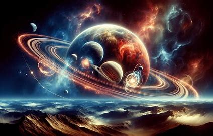

Exploring the Wonders of Our Solar System
Introduction:
The Solar System, our cosmic neighborhood, has captivated human imagination for centuries. From the scorching hot Sun to the icy cold Neptune, our Solar System is a vast and fascinating expanse. In this blog, we'll embark on a thrilling journey to explore the planets, dwarf planets, and other intriguing features of our celestial backyard.
The Sun: The Heart of Our Solar System
The Sun, the largest object in our Solar System, is the center of our planetary orbit. This blazing ball of hot, glowing gas accounts for 99.8% of the Solar System's mass.
Exploring the Wonders of Our Solar System

The Planets:
- Mercury: The smallest planet, closest to the Sun, with temperatures soaring up to 800°F (427°C).
- Venus: hottest planet, with thick clouds of sulfuric acid and droplets of water.
- Earth: Our home planet, where life thrives amidst perfect conditions.
- Mars:The Red Planet, with its rusty landscape and potential for water.
- Jupiter:The gas giant, with massive storms and dozens of moons.
- Saturn:The ringed beauty, with stunning aurora displays.
- Uranus:The tilted planet, with extreme seasons and unique rotation.
- Neptune:The farthest planet, with icy storms and the strongest winds.
Dwarf Planets:
- Pluto: The most famous dwarf planet, with a highly eccentric orbit.
- Eris:A dwarf planet in the Kuiper Belt, with a surface composed of ice.
- Ceres:The largest object in the asteroid belt.
Other Features:
- Asteroid Belt:A region between Mars and Jupiter filled with rocky remnants.
- Comets:Icy bodies that release gas and dust as they approach the Sun.
- Kuiper Belt:A region beyond Neptune containing dwarf planets and icy bodies.
Conclusion:
Our Solar System is a breathtakingly complex and awe-inspiring place. Each planet and feature offers unique insights into the formation and evolution of our cosmic neighborhood. As we continue to explore and learn more about our Solar System, we're reminded of the infinite mysteries waiting to be uncovered.
Call-to-Action:
Share your favorite Solar System fact or question in the comments below!
Recommended Reading:
- "The Solar System" by NASA
- "Cosmos" by Carl Sagan
- "The Planets" by Dava Sobel
Next >>>
RESUME